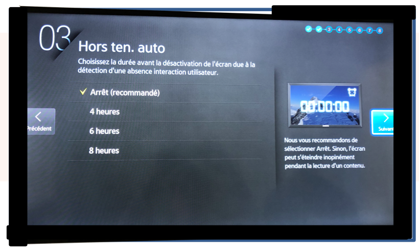
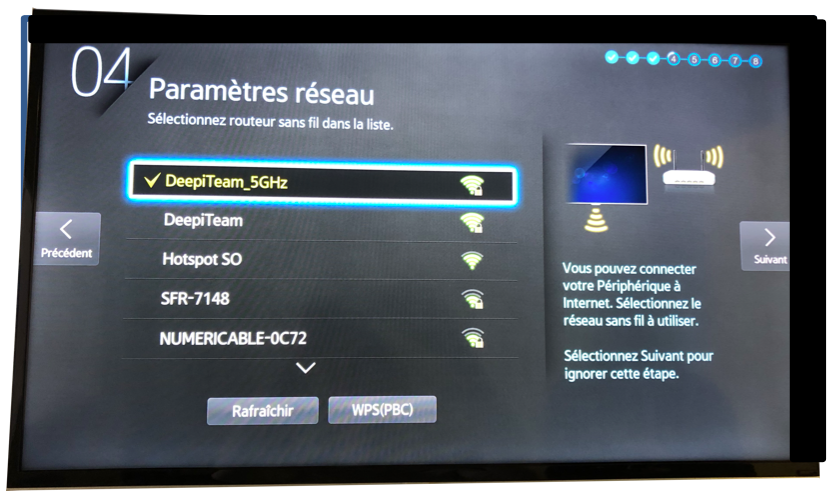
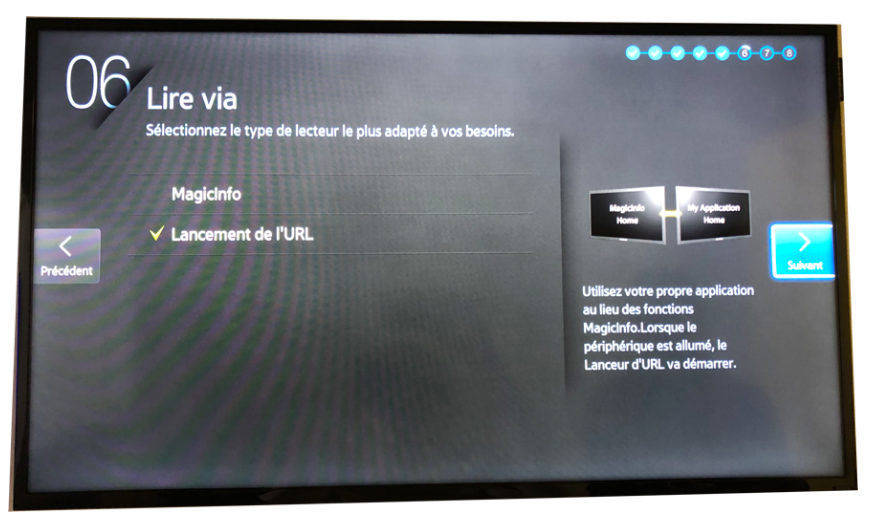
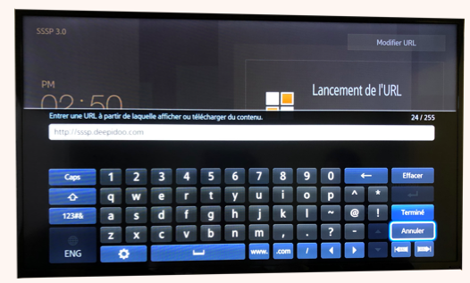

Choisissez votre langue

Choisissez l'orientation de l'affichage

Hors tension automatique: laissez sur Arrêt
L'écran va rechercher automatiquement une connexion Internet :
Si votre écran est connecté à l’aide d’un câble RJ45, il se connectera alors automatiquement

Vous ne pourrez pas installer l' application, si votre écran n'est pas relié à Internet
N'utilisez pas de Wifi pour invités (ce genre de réseau n'a pas assez de permissions pour permettre un fonctionnement optimal)
Pour une connexion Wifi : sélectionnez la connexion sans fil désirée, renseignez le mot de passe puis validez
translation missing: fr.tizen_cabled
Réglez la date et l’heure

Veuillez régler l'heure correctement, cette étape est fondamentale pour un bon fonctionnement
LECTEUR PAR DÉFAUT : Sélectionnez l’option « Lancement de l’URL »
NOM DE PÉRIPHÉRIQUE : Ne pas modifier

Configurer votre connexion internet avec IP Fixes.
Appuyer sur le bouton 'Home' -> Etat du réseau -> OK
Cliquez sur 'Param IP' puis entrez les données fournies par votre siège

=> Config IP : choisir 'Obtenir Manuellement'
=> Adresse IP: fournie par votre siège
=> Masque Sous Réseau: fourni par votre siège
=> PAsserelle : fournie par votre siège
=> Serveur DNS : fourni par votre siège

Cliquez sur le bouton Menu -> System -> Lire Via -> Lancement de l'URL -> OK
Cliquez sur le bouton Home -> Lancement de l'URL. Puis installez l'application web

Renseignez l'URL 'http://sssp.deepidoo.com' puis validez en cliquant sur 'Terminé'
Composez le code fournit par Deepidoo puis pressez la touche OK (Vérifiez que l’adresse qui s’affiche corresponde bien à votre magasin avec de valider)